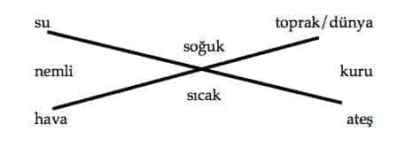
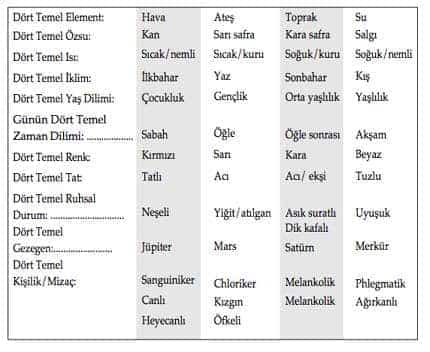
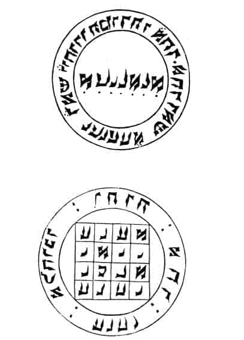
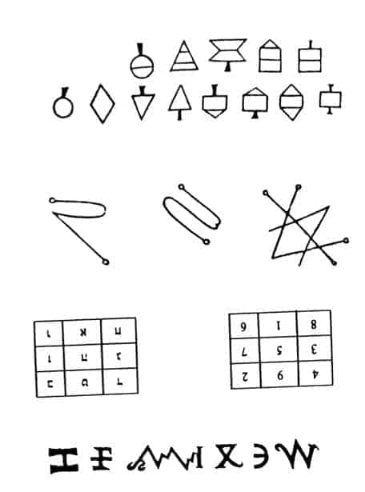
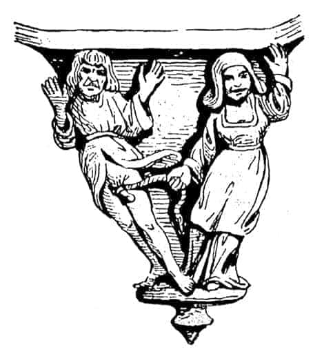

3.2. KRONOS-SATÜRN ve MELANKOLİ İLİŞKİLERİ
I.
Melankoli, özellikle ortaçağ dünyasında, çekim gücü yüksek bir “kara-delik” işlevi görmüş; çok kez eğretileme bir tanımlama olarak kullanılmıştır. Bu kavramı kullananlar çok şeyler anlattıklarını ve anladıklarını düşünmüşlerdir hep...
Çoğu zaman somut temellerini ve nedensellik ilişkilerini açıklamak olanaksız olsa bile melankoli kadar, çok değişik konularda ve çok şeyler anlatan bir kavram/tanımlama az görülmüştür.
Melankoli üzerine anlatılan mitolojik söylenceleri, astrolojik yakıştırmaları bu tür bir bağlam içinde değerlendirmek uygun olabilir.
Antik “altınçağ tanrısı” Kronos ile zaman tanrısı Chronos ve Antik İtalyan tarım tanrısı ve Satürn gezegeni ile melankolik mizacı/kişiliği bağdaştıran mitolojik söylencelerin, astrolojik-kozmolojik varsayımların çokluğuna karşın, bunların nasıl ve nereden ortaya çıktıkları yeterince bilinmemektedir... Oysa ortaçağ boyunca –kimi zaman bugün bile– melankoliklere “Satürn Çocuğu” dendiği hep bilinmektedir. Bugün de örneğin İngilizcede melankolik insanlara, hüzünlü yüz ifadesi olanlara, “saturnine” denmektedir. Ayrıca gene İngilizce’de, ortaçağ inançları uzantısında, cumartesi gününe, Satürn gezegeni etkisinde kalmış gün anlamına gelen, “saturday” denmektedir. Bu örnekler diğer kültür alanları için de çoğaltılabilir.1
Ovidius, Dönüşümler’de “altınçağ tanrısı” Saturnus’un karanlık Tartanus’a atılmasından sonra evrenin Jüpiter’in buyruğuna girdiğini yazmıştır:
“Atılınca karanlık Tartanus’a, Saturnus girmiş Jüpiter
buyruğuna
Evren, başlamış altından düşük, keskin, parlak
Tunçtan değerli gümüş çağı”2
II.
Melankolik insanların dünyalarının çelişkiler ve zıtlıklarla dolu olduğuna inanılmıştır. Örneğin: Bilgi açlığı ile bilginin anlamsızlığı; bilicilik ile büyücülük; varlık ile hiçlik; büyük işler başarma isteği ile intihar; mutluluk ile mutsuzluk; güçlülük ile güçsüzlük; geçmiş zaman ile şimdiki zaman çelişkisi; varlık ile yokluk; ilgisizlik ile duyarlık; her şeyi evetleme ile her şeyi tahrip etme istemi vb. gibi duygu ve düşünceler, melankoliklerde görülebilen çelişkilerin sadece ilk akla gelenleri olabilir.
Melankolik insanlardaki bu çelişkiler ile antikçağ tanrısı Kronos’un kişiliği arasında –olasılıkla– bu tür bir bağlam içinde ilişki kurulmuş olabilir. Kronos’un yaşamı da melankolikler gibi tam bir çelişkiler yumağıdır. Kronos, gökyüzü tanrısı Uranos ile yeryüzü tanrısı Gaia’nın oğludur. Söylencelere göre Gaia, günün birinde Uranos’a kızar ve oğlu Kronos’un eline ekin biçmek için kullanılan demir bir orak verip babasının cinsel organlarını kesmesini ister... Kronos da babasının cinsel organlarını kesip denize atar... “Tanrı babalar ile oğulları” arasındaki güç-egemenlik kavgalarını anlatan mitolojik söylenceler burada bitmez. Tersine başlar.
Kronos, babasını “güçsüzleştirip” Olimpos dağına oturduktan sonra, sürekli korku içinde yaşamış; kendisinin de günün birinde çocukları tarafından, gene aynı biçimde “güçsüzleştirilip” öldürüleceğini düşünmüş. “Benzer bir saray darbesini” önlemek için de doğan tüm çocuklarını yutmaya başlamıştır. Karısı Rhea, son oğlu Zeus’u babasından gizli doğurmuş... Girit adasında bir mağarada saklamış. Zeus, beklendiği gibi günün birinde babası Kronos’u “güçsüzleştirip” yeraltına kapamıştır.
Kronos’un serüvenleri bu kadarla da kalmaz. Kronos aynı zamanda “altınçağ tanrısı”dır. Bolluğun, bereketin, yeryüzü cennetinin simgesidir. Kronos’un, bir yandan babasına ve çocuklarına karşı bu denli acımasız davrandığı anlatılırken, öte yandan onun yeryüzü cennetini kuran “altınçağın ilk tanrısı” olduğu söylenmiştir... Kronos, babasının cinsel organlarını kestiği demir orak benzeri bir saban ile toprağı-doğayı yaralayan bir düzenin (Hesiodos/Theoqonie), hem kastrasyonun hem de bolluğun ve bereketin simgesidir...
Kronos, oğlu Zeus tarafından egemenliğine son verilip “güçsüzleştirilip” yeraltına kapatıldıktan sonra kaçmış. Uzun bir yolculuktan sonra İtalya’ya gitmiş... Burada gene “altınçağ tanrısı” Satürn’e dönüşmüştür. Kronos burada da yurdundan kaçmak, sürekli ve zorunlu bir göç –sürgün– sürecinde yaşamak zorunda kalmıştır...
Mitolojiye göre, Satürn’ün İtalya’daki yaşamı görece dingin geçmiş. Büyük çelişkiler olmamıştır. Satürn, İtalyanlara tarımı, hayvancılığı öğretmiş, yeni bir “altınçağ” kurma denemesine girişmiştir.
Kronos’un çelişkileri şöyle toparlanabilir: Kronos, babasını “güçsüzleştirmiş”, oğlu tarafından da kendisi “güçsüzleştirilmiştir”.3 Demir saban, hayvan besiciliği ile doğa-insan birlikteliğini, bütünlüğünü bozmuş...
Doğa-insan arasında geri dönüşsüz ikilemin başlamasına neden olmuş... İnsan, doğaya egemen olmaya başladıkça, kendi özgürlüğünü yitirmiş... Egemenlik altına girmiş... Kronos, “altınçağ”ı kurmaya çalışırken, yeraltına kapatılmış... Sonsuz mutlu bir yaşamı düşlerken, yurdundan kaçmak zorunda kalmış, ömür boyu yurtsuz, sürgün yaşamaya mahkûm olmuştur...
Kronos’un yaşamının bu aşamasında zaman tanrısı Chronos, devreye girmiştir. Zamanın, zıtları ve çelişkileri hem ortaya çıkardığını hem de –kendi mantığına göre– çözdüğünü gösterir. Ancak zaman akışı içinde, olumlu görülenler, olumsuzlaşabilir. Ya da olumsuzlar olumlu olabilirler. Zıtlıklar, çelişkiler zaman içinde çözülürler.
Burada da pek çok mitolojik düşünce, söylence birbirine karışmış, ancak sistematik olmasa da gene de insanların günlük yaşamlarında son derece önemli “birşeyleri” anlatmaya çalışmıştır. Bunlardan hayli eklektik birliktelikler olmuş ama isteyenler bu söylencelerden gene de çok şeyler anlayabilmişler ve anlatabilmişlerdir...
III.
Antik Grek kültüründe evren üzerine pek çok varsayımda bulunulmuş ancak bu gözlemler genellikle gökyüzü, yıldızlar, Güneş ve Ay ile sınırlı kalmıştır. Grekler, gezegenler üzerine ayrıca fazla bir şey söylememişler; örneğin Grekler’in gezegen tanrıları olmamış; gezegenlerin birey-insan üzerindeki etkileri pek fazla tartışılmamıştır... Gezegenler bilgisi Grek-Roma kültürlerine, genellikle Babil ve diğer Önasya kentleri üzerinden gelmiştir. Arap kültürünün bu etkisi çeşitli zamanlarda ve mekânlarda ortaya çıkmıştır.4
Bir olasılık, Babil Tapınağı bilgelerinden, MÖ 350-340 doğumlu Berosson, Kos Adası’nda bir astroloji okulu açmış, burada Babil astrolojisi okutmuş ve Babilonica adlı bir yapıt bırakmıştır. Berosson’un bu yapıtı Grek ve Roma aydınlarına Babil astrolojisini anlatan önemli bir kaynak olmuş. Sonraki yıllarda Bizanslı bilgelerin Mezopotamya-Arap astrolojisi bilgisinin Avrupa kültürüne iletilmesinde önemli katkıları olmuştur.5
Geç Grek kültürü döneminde, Atina, Bizans ve İskenderiye kentlerini kapsayan büyük bir kültür üçgeni oluşmuştur. Bu üçgende oluşan bilgi birikimleri öncelikle Bağdat ve diğer Önasya, Arap, Pers kentlerinde toplanmış ve oradan da özellikle Kuzey Afrika ülkeleri üzerinden bir yan kol İtalya, Salerno’ya, anayol ise İspanya, Toledo, Cordoba ve Paris üzerinden, Avrupa’ya yayılmıştır.6
Babil astrolojisi beş gezegen tanımıştır. Bunlar Jupiter, Venüs, Mars, Merkür ve Satürn’dür. Bu gezegenlerin insanlar üzerine olan etkilerinin olumlu, olumsuz ve yansız olduğu düşünülmüştür. Buna göre: Jupiter ile Venüs’ün etkilerinin olumlu, Mars ile Satürn’ün etkileri olumsuz, Merkür’ün etkisinin yansız olabileceği öngörülmüştür.
Arap astrolojisine göre, Satürn gezegeninin, bedendeki “kardeş organı” dalaktır. Ve bu inanca göre Satürn gezegeni, özellikle dalak üzerinden insan bedenini, ruhsal dünyasını ve kişiliğini etkiler. Dalak, karaciğerin tersine kuru ve soğuktur... Batı dillerinde dalak anlamına kullanılan “spleen” sözcüğü ile melankoli ilişkisi bugüne değin süregelmiştir. Örneğin, Baudelaire’in ünlü yapıtı “Paris Sıkıntısı” ya da “Paris Hüznü” anlamına gelen “Spleen de Paris”de dalak anlamına gelen “spleen”, hüzün/sıkıntı karşılığı kullanılmıştır.
Diğer gezegenler ve gök cisimleriyle organlar arasındaki ilişkiler de şöyle tanımlanır: Jupiter, karaciğeri; Mars, sarı safrayı; Ay, akciğeri; Merkür, beyni; Güneş, kalbi; Venüs, mideyi etkiler; kan, tüm bendensel harmoniyi sağlayan temel özsudur.
Avrupa’da gezegenler üzerine yapılan tartışmalar için temel kaynağı, dokuzuncu yüzyıl Arap bilgelerinden Ebû Ma’şer’in astroloji kitapları oluşturmuştur. Ebû Ma’şer, Horasan’da Belh bölgesinde doğmuş, Bağdat’ta ölmüştür (785?-886).7 Astroloji üzerine olan yapıtları, yüzyıllar boyunca ortaçağ kültürlerini etkilemiştir. Ebû Ma’şer’in, özellikle Satürn üzerine yaptığı varsayımlar önemli olmuştur. Ma’şer’e göre Satürn gezegeni, soğuk, kuru, acı, kara, koyu, pürüzlü, ağır rüzgârlı bir yapıdadır... Satürn gezegeni etkisinde kalan “Satürn Çocukları” çok yerler, sevgilerinde sadıktırlar, dost canlısıdırlar; tarım, inşaat, su işleri gibi çeşitli alanlarda çalışabilirler, bol kazançları olabilir, çok hediye verirler, yoksulluğa düşerler; bu nedenle hırsızlık yapabilirler, sıklıkla öfkelenirler, hüzünlenirler, yanlız kalırlar, onurludurlar; bunların arasından kahramanlar çıkabilir; tiranlaşabilirler, şiddet kullanma eğilimindedirler; sıklıkla deniz yolculuğuna çıkmayı severler, hapse düşerler, yavaş haraket ederler, anlayışlıdırlar, deneyimlidirler; kolay öfkelenirler, öfkelerine hâkim olamazlar, gizemlidirler... düşlerini, düşüncelerini, gizlerini kimseyle paylaşmak istemezler vb.8
Ma’şer’in bu tür varsayımları, Satürn-melankoli ilişkisi üzerine yapılan tartışmaları uzun süre etkilemiştir.
Ortaçağ inançlarına göre Satürn gezegeni, insanları kendi yapısına uygun yaydığı kara, kuru, soğuk, gamlı bir aura (hale) ile etkiler. Bu etki, insanları huzursuz, hüzünlü, yılgın, günahkârlığa eğilimli ve bilge konumlara getirir... “Satürn Çocukları”nın ruhları acı içinde olmalarına karşın, tanrısal işlerle uğraşırlar... Yaşamları boyu günahkârlığa özel bir yatkınlık içinde, acı çekmek, hüzünlü, yetenekli ve bilge olmak, bu insanların yazgısıdır...
IV.
Antikçağın beden özsuları (humores) öğretisi, ortaçağda kişilikler/mizaçlar (temperament) ve gezegenler öğretileriyle karıştırılıp yeniden yorumlanmıştır.
Bunun için antikçağ İyonya, materyalist filozoflarının ve özellikle de Empedokles’in dört asıl element öğretisi temel alınmıştır. Büyük evren ve birey insanla ilgili pek çok olgu, bu dört temel ögeye indirgenip, birbirleriyle bağdaştırılıp bütünleştirilip, dört temel kişiliğe/mizaca uygun özelliklerde kristalize edilmeye çalışılmıştır.
Evrenin (Kozmos’un) temel aşamaları, öncelikle yeraltı, yeryüzü, gökyüzü ve tin/idea/anlayış olarak gene dört gelişme düzeyinde düşünülmüş, evrenin çoğalması, genişlemesi ve gelişmesi dört asıl element ve ısı durumuyla birlikte mantıksal dörtgen içinde gösterilmiştir.

Mantıksal dörtgen9

Bu mantıksal dörtgenin çeşitli boyutlarda çoğaltılmasıyla karmaşık kişilik/mizaç cetvelleri ortaya çıkmıştır. Bu tür öğretileri somutlaştırmak için, en genel çizgileriyle bir örnekleme sergilemek yararlı olabilir.10, 11
Buna göre melankoliklerin, toprak, kara safra, kuru/soğuk, sonbahar, orta yaşlılık, öğleden sonrası, kara, acı/ekşi, asık suratlı, dik kafalı, hüzünlü... parametrelerin ortaya çıkaracağı bir humoral patolojinin “humor melancholicis”un oluşturduğu “karışımın” kişilikleri/mizaçları olabilecekleri öngörülmüştür...
Ortaçağda öne sürülen bu son derece karmaşık savlar, Cornelius Agrippa’nın Gizemli Felsefe (De Occulta Phlosophia) yapıtında, gizemli evren görüşü olarak sistemleştirilmeye çalışılmıştır...12
V.
Heinrich Cornelius, Agrippa’nın yazdığı Gizemli Felsefe (De Occulta Phlosophia) yapıtı kadar 16. yüzyıl ve sonrasını etkileyen başka bir yapıt zor bulunur. Rönesans hümanistleri ve bu arada özellikle de Albrecht Dürer üzerinde büyük etki yapan Agrippa’nın yaşam öyküsüne ve yapıtına biraz daha yakından bakmak “ortaçağın ruhunu” anlamaya yardım edebilir.
Agrippa’nın yapıtı çok karmaşık bir zaman diliminde ortaya çıkmıştır. 15. yüzyılın sonu, 16. yüzyılın başlarında, ortaçağın ekonomik, toplumsal, kültürel boyutlarda dağılmaya başladığı dönemlerde yaşanan büyük boyutlu “korkutucu boşluk” içinde, dünyayı, şeytanların, cadıların, cinlerin, insan kılığına girmiş hayvanların ya da hayvan biçimine dönüşmüş insanların kapladığı düşünülmüştür... Bu koşullarda Machiavelli’nin bile cinlere karşı muska taşıdığı söylenmiştir. Bu tarihlerde, salt Paris’te 30.000 astroloğun, simyacının, büyücünün toplandığı sanılmaktadır. Sadece sokaktaki insanın değil, Hıristiyan dininin tanrıya en yakın temsilcisi Papa III. Paul’ün bile Vatikan’da yıldız falına baktırmadan, ne bir toplantıya katıldığı ne de bir geziye çıktığı bilinmektedir... Bu dönemde insanların en büyük umutlarının Mezopotamya, Mısır, Arabistan-Önasya kökenli bir muska-uğur ve benzeri koruyucu taşımak olduğu söylenegelmiştir.13

Agrippa’nın kitabında, melankoliye karşı olduğu söylenen muskanın
ön ve arka yüzü.

Agrippa’nın kitabına göre tanrısal harflerin, şekillerin gizemi.
Agrippa –bu koşullarda– 14.9.1486 tarihinde Köln’de doğmuş. Hukuk okumaya başlamış. Çok erken yaşlarda gizli bilimlere (magie), Kabala’nın harfçilik, sayıcılık gibi gizemli evren öğretilerine ilgi duymuş. 1507’de Avrupa’nın en ünlü gizli bilimcilerinin toplandığı Paris’e gitmiş. Bu konu, onun hukuktan çok daha fazla ilgisini çekmiş. Sonra parasal nedenlerden ötürü Köln’e geri dönmüş. Yeniden Paris’e gitmiş... Köln, Paris ve hukuk ile gizli bilimler arasında karar kılmakta çok sıkıntı çekmiş. Bir ara gizli bilimlere karşı duyduğu ilginin engizisyon tarafından öğrenilme tehlikesinin getirdiği korkunun etkisiyle teoloji eğitimi görmeye başlamış... Kilise adına gönüllü asker yazılmış ve bazı savaşlara katılmıştır.14
Agrippa, bu sıralar ünlü yapıtı Gizemli Felsefe’yi (De Occulta Philosophia) yazmaya başlamıştır. Agrippa bu yapıtında, Hıristiyanlık, gizemli evren öğretileri ile Yeniplatonculuğu ve Antik Grek felsefesini yeni bir sentez içinde toplamayı denediğini... felsefe, bilgelik, gizli bilimler ile gökyüzü güçlerinin desteğini alarak, yeryüzündeki bozuklukları yeniden denetim altına almaya çalıştığını söylemiştir. Ancak Agrippa’nın bu iyi niyetli savlarını kilise pek anlamamış. Hakkında dava açılmış. Agrippa, engizisyondan kılpayı kurtulmuştur.
Agrippa’nın kişiliğini ve yaşadığı koşulları biraz daha yakından tanıyabilmek için Fransa’nın Metz kentinde savunma avukatı olarak katıldığı bir “Cadı Davası”nı anımsamak gerekebilir. 1519 yılında, Metz kentinin Vapey yöresinde bir kadın “cadılıkla” suçlanmış ve engizisyon mahkemesi önüne çıkarılmış. Engizisyon Dominikar Sevini’nin iddianamesine göre kadının annesinin de bir zamanlar “cadılıkla” ilişkisi olmuş... Kadın şeytanla yatarak çocuk doğurmuş... Ve çocuklarını cinlere vaftiz ettirmiş... Hukuk, tıp, teoloji doktoru olan Agrippa, kadının savunmasını üzerine almış. Savunmasında kadının yaşam tarzının, davranışlarının değil, engizisyon mahkemesi yargıçlarının tavırlarının, mantıklarının tanrıtanımazlık ve dinsizlik olduğunu söylemiştir. Engizisyon, Agrippa’nın savunmasını olumlu bulmuş. Kadın aklanmış. İşkence edilerek öldürülmekten kurtulmuştur. Fakat Agrippa, mahkemenin bitiminden hemen sonra Metz’i terk etmek ve yeniden başka bir kente göç etmek zorunda kalmıştır...15
Korku, acı, hüzün dolu bir yaşam sürdüren Agrippa, 1535 yılında, Grenoble’da, 49 yaşında ölmüştür.16
Gizemli Felsefe’nin (Agrippa) önsözü 1510 yılında yazılmış. Az sayıda ön baskısı yapılmış ya da el yazması bu yıllarda çoğaltılmıştır. Kitabın asıl basımı 1530 yılında gerçekleşmiştir. Agrippa’nın Gizemli Felsefe kitabı, 16. yüzyıl aydınlarını, bu arada özellikle Alman hümanistlerini çok etkilemiştir.
Nürnberg hümanist çevresi bu yapıtı daha ilk ön baskısından, bir anlamda el altından ve olasılıkla Willibald Pirckheimer’in evinde okumuşlardır. Dürer, bu yapıtın özellikle etkisi altında kalanlardan olmuştur. Agrippa’nın çalışması Melencholia I gravürünün tinsel bazını oluşturan başlıca yapıtlardan biri olmuştur.
Büyük bir zaman dilimi içinde pek çok hümanisti etkilemesine karşın, Agrippa’nın bu yapıtında gerçekten ne demek istediği bugün bile yeterince anlaşılmamıştır17 Agrippa, bu büyük çalışmasında dört temel elementi, Hıristiyan tanrısını, Babil bilimcileriyle Parisli büyücüleri, Platon ve Aristoteles ile Augustius ve Aquinolu Thomas’ı bir potada eritip yeni bir güç ortaya çıkarmaya çalışmıştır. Sistematik bir öğretici olmasa da ortaçağın tekdüze karanlığından bunalmış hümanistlere soluk alma olanağı vermiştir. İnsanlar bu yapıtla, “Batıl inançlı olmasa bile, batıl inançların yardımıyla, daralmış dünyalarının dışında umutlanma olanağına kavuşmuşlardır.”18

“Şeytani Melankolik” cadı kadınların dünyada egemenlik kurmaları durumunda varsayılan, eski anaerkil düzeni geri getirip -erkeklere uygulayacakları yöntem...
16. Yüzyıl kilise yontusu, ayrıntı. (Ines Brenner / Gisela Morgenthal)
Agrippa’nın Satürn gezegeni ve diğer göksel olaylarla melankoli arasındaki ilişkileri yoğun örneklerle betimlemesi ve buna karşı çeşitli koruyucular önermesi, özellikle melankolik hümanistler arasında ilgiyle karşılanmıştır.
Agrippa hekim olmasına karşın, hekimlerin verdikleri ilaçların sağaltmaya çalıştıkları hastalıklardan kötü olduğunu, insanların, dini ve tanrıyı incitmeden, sihir ve büyü yoluyla hastalıklardan kurtulabileceğini savunmuştur. Bunun için de hangi tür doğa ve doğaüstü güçleri kullanarak evren ve insanın dingin birliğinin, “konstellation”un kurulabileceğini bulmaya çalışmıştır. Aristoteles öğretisinden hareketle, melankoliklerin bilge, yetenekli, imgelemleri ve anlayışları güçlü, yaratıcı, sanatkâr insanlar olduklarını sergilemeye çalışmıştır. Agrippa, Satürn gezegeninin, insanları dalakları üzerinden nasıl etkilediğini ve buna karşı nasıl önlemler alınması gerektiğini sayfalarca anlatmıştır. Özellikle Kabala’dan öğrendiği yazıcılık, şekilcilik ile ilgili pek çok bilgi vermiş, muska ve benzeri koruyucu örnekleri göstermiştir...19, 20, 21
IV.
Toplumsal törenlere, dinsel ayinlere katılmayan, her türlü ritüelden kaçan Satürn Çocukları çağlar boyunca “toplumun barış içinde uyumlu yaşamasını bozan uyumsuzlar” olarak kovuşturulmuşlar, tutuklanmışlar, yakılmışlardır. Sorun her zaman –eksiksiz bir biçimde– (din-devlet) gücünün birey-insan düzeyinde koşulsuz içselleştirilmesini gerektirmiştir (Foucault).22 Toplumsal disiplini sağlamaya salt “pazarın kontrolü” yetmemiş, bunun için, duyguların da denetimi gerekmiştir. Bu alanda tıp, din, hukuk, toplumbilimler, politika hep birlikte çalışmışlardı.23 Ortaçağ boyunca sürdürülen “cadı avları” ile melankolik Satürn Çocukları’nın izlenmesi ve avlanması arasında çok yakın ilişkiler görülmüştür. Gerek melankoliklerin gerekse cadıların yaşamdan, toplumsal yapılanmalardan, insanlararası ilişkilerden olumsuz (negatif) deneyimleri olduğu açıktır. Ortaçağ engizisyon kayıtlarına göre, cadılar da melankolikler gibi, toplumsal yerleşim yerlerinden uzaklarda barınan, insanlarla ilişkileri pek sevmeyen (misanthropie), yalnız yaşayan, toplumsal kurumları, aile ilişkilerini (bile) yadsıyan, yüzlerinde öfkeli bir hüzünle az konuşan, kuşkulu bir kaygıyla çok düşünen, donuk yüzlü, bedensel ve ruhsal işlevleri yavaşlamış ama bilgili insanlar olarak betimlenmişlerdir. Cadılar çok kez “şeytani melankolik” (melancholia diabolica) olarak tanımlanmışlardır.24, 25 Ancak dinbilimcileri salt cadıları değil, genel olarak kadınları, hep inançsız insanlar olarak düşünmüşlerdir. Femine tanımı etimolojik olarak fides-minos sözcüklerinden oluşmuş; bunlar da az inanan ve inancından çabuk ayrılabilen anlamında kullanılmıştır.26
Bu nedenle toplumdan uzakta, tek başına yaşayan, çok düşünen, az konuşan, pek çok şey bilen, hastalıkları sağaltan ilaçlar (bile) yapabilen kadınlar, özellikle tehlikeli görülmüşlerdir. Bunların potansiyel düzen karşıtları olarak şeytanla birlikte dünya düzenini değiştirmeyi amaçladıkları düşünülmüştür. Kuşkusuz, bilinebildiği kadarıyla, ne melankolikler ne de cadılar herhangi bir yerde ne örgütlenmişler ne de politik istemlerde bulunmuşlardır. Ancak onların yaşam tarzları öylesine bir kökten yadsımayı (inkârı) ve her zaman olmasa bile çok kez ödünsüz bir tanrıtanımazlığı sergilemiştir ki yöneticiler, bu tavırları, her dönemde ve her yerde, ağır bir toplumsal ve politik eleştiri olarak kabul etmişlerdir.
Süreç içinde, melankoliklerin ve cadıların gösterdikleri yaşam tarzlarının “günah”, “hasta” “suçlu” ya da “normal” görülüp görülmeyeceği, toplumların içinde bulundukları gelişmişlik düzeyine göre değişmiştir.
Cadı yakılması, Hollanda’da 1610, İngiltere’de 1692, Fransa’da 1745, Almanya’da 1775, İsviçre’de 1782, Polonya’da 1793 tarihlerinde –hiç olmazsa resmen– son bulmuştur.27
Ortaçağda “günah” olan melankoli, modern çağlarda “suç” olmuş, “toplumsal segmentin” bu bölümü yönetimler tarafından her zaman “dikkatle izlenmiş” ve denetim altında tutulmaya çalışılmıştır.
VII.
Rönesans ile birlikte Satürn gezegeninin insanlar üzerine olası etkilerine başka bir gözle bakılmaya başlanmıştır. Satürn, uzak ve soylu, usun, düşüncenin, duygu ve yeteneklerin en fazla yoğunlaştığı, ozansal esrimelerin, “tanrısal çılgınların” gezegeni olarak tanımlanmıştır. Satürn’ün melankolik ozanların yaratıcı coşkularını oluşturan, onların koruyucu gezegen tanrısı olduğu düşünülmüştür.
VIII.
Sözü geçen yetkililer melankolikleri tarih boyu çeşitli biçimlerde değerlendirmişler, sınıflandırmışlardır. Buna karşın, tarihin ünlü melankolik filozofu Herakleitos, toplumu gösterişçi dönekler ve aptallar olarak ikiye ayırmıştır. Hekimleri, politikacıları, din adamlarını, bilicileri ve tüccarları birinci gruba, geri kalanları da ikinci gruba sokmuştur.28